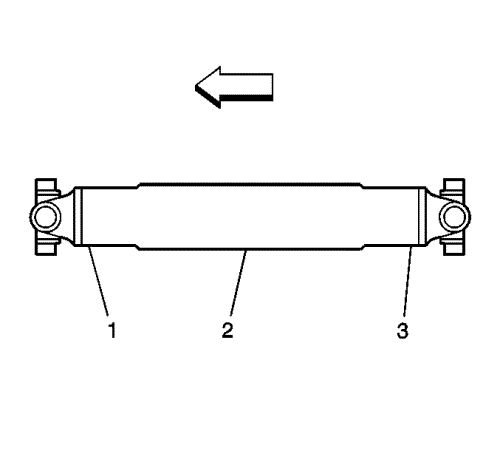
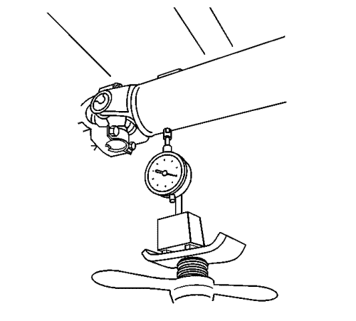
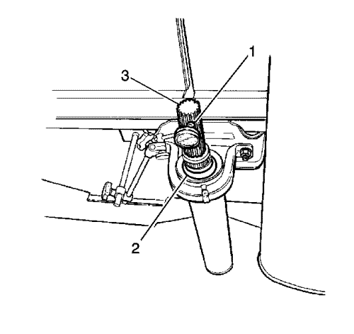

Medición del alabeo del árbol de transmisión
Herramientas especiales
| • | Juego indicador de dial de pie magnético GE-7872 o equivalente |
| • | Juego del Indicador de dial GE-8001 ó equivalente |
Si desea informarse sobre herramientas regionales equivalentes, consultar Herramientas y equipo especial .
Nota:
| • | Este procedimiento de medición está destinado a medir el alabeo del árbol de transmisión para sistemas de árbol de transmisión con 2 o 3 juntas en U solamente. No es para sistemas de transmisión con sólo 1 junta en U o con sólo juntas de velocidad constante y/o conjuntos de acoplador. |
| • | Al medir el alabeo de árboles de transmisión, no incluya las fluctuaciones del indicador de disco debidas a soldaduras o irregularidades de la superficie. |
| • | Compruebe siempre el alabeo de cualquier árbol de transmisión repuesto. |

- Elevar el vehículo y soportarlo de manera segura. En vehículos con ejes macizos, asegúrese de que el eje motriz está soportado a la altura de circulación - carrocería del vehículo soportada por los componentes de suspensión. Asegúrese de que las ruedas pueden rotar libremente. Consultar Elevación del vehículo con un gato .
- Ponga el cambio en PUNTO MUERTO.
- Limpie la circunferencia del árbol o árboles de transmisión de cualquier residuo y/o capa base a lo largo de las posiciones de la parte delantera (1), central (2) y trasera (3).
- Compruebe el árbol o árboles de transmisión por si hay mellas, daños y/o piezas ausentes. Cualquier árbol de transmisión que esté mellado o dañado se tiene que sustituir.

- Para sistemas de transmisión de 1 y 2 piezas, monte el juego indicador de dial de pie magnético GE-7872 o equivalente, o el juego indicador de dial GE-8001 o equivalente en los bajos del vehículo o en un soporte de servicio situado apartado de la soldadura de la horquilla de la junta en U del árbol de transmisión.
- Gire a mano la brida del piñón del eje motriz, la brida de entrada del tubo de par, la salida de la transmisión o la brida de salida de la caja de transferencia a la vez que toma medidas del alabeo del árbol o árboles de transmisión. El árbol de transmisión girará más fácilmente en una dirección que en la otra. Si es necesario, los conjuntos de neumático y rueda e incluso los conjuntos de mordaza de freno se pueden colocar y apoyar a un lado, o los tambores de freno se pueden retirar del eje motriz para que el árbol o árboles de transmisión giren más fácilmente.
- Para todos los sistemas de transmisión, mida y registre el alabeo en cada ubicación de horquilla soldada de junta en U (1, 3) y en el centro (2) de cada eje de transmisión.
- Para sistemas de transmisión de una pieza, proceda al paso 10.

- Para sistemas de transmisión de 2 piezas, realice las siguientes comprobaciones y mediciones del árbol de muñón:
| 9.1. | Marque la posición de contacto para cada extremo del árbol de transmisión que contenga la horquilla deslizante y a continuación desmonte el árbol. |
| 9.2. | Compruebe el conjunto de cojinete de apoyo del árbol de transmisión (2) por si hubiera componentes de goma dañados, cojinetes desgastados o un soporte dañado/agrietado que pudiera estar afectando al alabeo de los árboles de transmisión. |
| 9.3. | Si el conjunto de cojinete de apoyo muestra cualquiera de estas condiciones, se tiene que cambiar antes de proceder. |
| 9.4. | Compruebe el conjunto de cojinete de apoyo (2) por si hubiera arandelas/chapas de relleno sueltas o ausentes, si está equipado con ellas. Vuelva a montar correctamente o cambie las arandelas/chapas de relleno según lo necesario para garantizar la alineación correcta del conjunto de cojinete de apoyo. |
| 9.5. | Coloque el juego indicador de dial de pie magnético GE-7872 o equivalente (1), o el juego indicador de dial GE-8001 o equivalente (1) a aproximadamente 13 mm (½ pulg.) del extremo del árbol de muñón (3). |
| 9.6. | Registre la medición del alabeo en las ranuras del árbol de muñón. |
- Compare las mediciones de alabeo del árbol de transmisión registradas con las especificaciones de tolerancia del alabeo.
- Si el sistema de transmisión dispone de una junta en U en la brida de salida de la caja de transferencia o de la transmisión, y si las mediciones del alabeo del árbol de transmisión exceden las especificaciones de tolerancia del alabeo para dicho árbol de transmisión en tal posición, o en el árbol de muñón si forma parte del árbol delantero, realice lo siguiente:
| 11.1. | Compruebe la deflexión del árbol de salida de la caja de transferencia o de la transmisión por si existen indicios de casquillos desgastados o dañados, lo cual podría afectar al alabeo del árbol de transmisión. |
Una junta de salida de la caja de transferencia o de la transmisión que tenga una fuga puede indicar un problema en el casquillo del árbol de salida.
| 11.2. | Si se determina que el casquillo del árbol de salida de la caja de transferencia o de la transmisión está desgastado o dañado, se tiene que cambiar el casquillo antes de proceder. |
| 11.3. | Si se ha cambiado el casquillo del árbol de salida de la caja de transferencia o de la transmisión, vuelva a medir y registre el alabeo del árbol de transmisión en las mismas ubicaciones medidas anteriormente. |
| 11.4. | Compare las nuevas mediciones de alabeo del árbol de transmisión registradas con las especificaciones de tolerancia del alabeo. |
| 11.5. | Si las nuevas mediciones del alabeo del árbol de transmisión siguen excediendo las tolerancias de alabeo en la misma ubicación o en el árbol de muñón, si es parte del árbol delantero, el árbol de transmisión necesita cambiarse antes de proceder. Compruebe el alabeo del nuevo árbol de transmisión. |
| 11.6. | Si se determina que el casquillo del árbol de salida de la caja de transferencia o de la transmisión no está desgastado o dañado, se tiene que cambiar el árbol de transmisión antes de proceder. Compruebe el alabeo del nuevo árbol de transmisión. |
- Si el sistema de transmisión dispone de una junta en U en la brida de entrada del tubo de par del piñón del eje motriz, y si las mediciones del alabeo del árbol de transmisión exceden las especificaciones de tolerancia del alabeo para dicho árbol de transmisión en tal posición, o en el árbol de muñón si forma parte del árbol trasero, realice lo siguiente:
| 12.1. | Marque la posición de contacto para cada extremo del árbol de transmisión y a continuación desmonte el árbol de la entrada del piñón, o la brida de entrada del tubo de par. |
| 12.2. | Gire el árbol 180 grados desde su posición original. |
| 12.3. | Vuelva a montar el árbol en el piñón o en la brida de entrada del tubo de par. |
| 12.4. | Vuelva a medir y registre el alabeo del árbol en las mismas ubicaciones medidas anteriormente. |
| 12.5. | Compare las nuevas mediciones de alabeo del árbol registradas con las especificaciones de tolerancia del alabeo. |
| 12.6. | Si cualquiera de las nuevas mediciones del alabeo sigue excediendo las tolerancias de alabeo, realice lo siguiente: |
| 12.6.2. | Si el alabeo de la brida de entrada del tubo de par o el piñón excede las tolerancias de alabeo, se debe volver a reindexar o sustituir la brida para que el alabeo vuelva a estar dentro de tolerancia antes de proceder. |
| 12.6.3. | Si la brida de entrada del tubo de par o el piñón se han reindexado o sustituido, devuelva el árbol de transmisión a su relación original al volver a montar el árbol en la brida. |
| 12.6.4. | Si la primera medición del alabeo de la brida de entrada del tubo de par o el piñón estaba dentro de las tolerancias, es necesario cambiar el árbol de transmisión. Compruebe el alabeo del nuevo árbol de transmisión. |
| 12.6.5. | Si la brida de entrada del tubo de par o el piñón se han reindexado o sustituido, vuelva a medir y registre el alabeo del árbol en las mismas ubicaciones medidas anteriormente. |
| 12.6.6. | Compare las nuevas mediciones de alabeo del árbol registradas con las especificaciones de tolerancia del alabeo. |
| 12.6.7. | Si cualquiera de las nuevas mediciones del alabeo sigue excediendo las tolerancias de alabeo, desmonte y gire el árbol 180 grados desde su posición original hasta la brida de entrada del tubo de par o el piñón que se haya reindexado o sustituido. |
| 12.6.8. | Monte de nuevo el árbol y vuelva a medir y registre el alabeo del árbol en las mismas ubicaciones medidas anteriormente. |
| 12.6.9. | Compare las nuevas mediciones de alabeo del árbol registradas con las especificaciones de tolerancia del alabeo. |
| 12.6.10. | Si cualquiera de las nuevas mediciones del alabeo del árbol sigue excediendo las tolerancias de alabeo, se tiene que cambiar el árbol. Compruebe el alabeo del nuevo árbol de transmisión. |
- Para sistemas de transmisión de 2 piezas, si las mediciones del alabeo del árbol de transmisión en el punto de contacto de la horquilla soldada con la horquilla deslizante exceden las especificaciones de tolerancia de alabeo para dicho árbol de transmisión en tal ubicación, realice lo siguiente:
| 13.1. | Si el árbol de muñón dispone de chavetas para garantizar la alineación correcta de la horquilla deslizante, el árbol de transmisión se tiene que sustituir. |
| 13.2. | Si el árbol de muñón no dispone de chavetas, marque la posición de contacto de cada extremo del árbol de transmisión y a continuación retire la horquilla deslizante del árbol de muñón. |
| 13.3. | Gire el árbol 180 grados desde su posición original. |
| 13.4. | Vuelva a montar la horquilla deslizante al árbol de muñón. |
| 13.5. | Vuelva a medir y registre el alabeo del árbol en la ubicación de la horquilla soldada a la horquilla deslizante. |
| 13.6. | Compare las nuevas mediciones de alabeo del árbol registradas con las especificaciones de tolerancia del alabeo. |
| 13.7. | Si las mediciones de alabeo de árbol de transmisión siguen excediendo las tolerancias de alabeo en el punto de contacto de la horquilla soldada a la horquilla deslizante, es necesario cambiar el árbol de transmisión. Compruebe el alabeo del nuevo árbol de transmisión. |
| © Copyright Chevrolet Europe. All rights reserved |